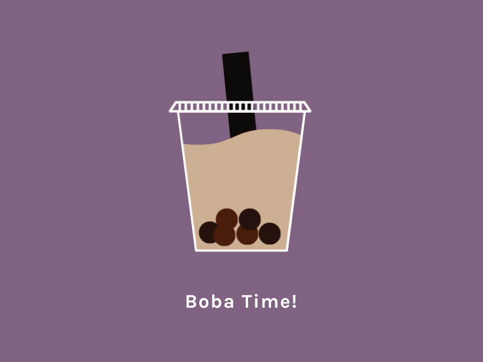

I am an active member of the school's robotics club. Our club focuses on competing in the
FIRST Robotics Competition as the Skyline Spartabots. I have the leadership role of build lead for the 2018 build and competition season,
in preparation of FIRST Power Up. Written below are lyrics to our only rap song, the "Gracious Professionalism Rhythm".
Yo, robotics club is just so cool
We build robots everyday after school
In a janitorial closet that's full of tools
And we collect buttons like they're shiny jewels
Competitions at FIRST are the highlight of my year
I got my whole life devoted to be in the top tier
You may think that I'm a noob but let's make this stuff clear
I'm in robotics club, and the HYPE STARTS HERE
I run for the Skyline Cross Country JV team. I have been running cross country since the summer before my freshman year up until now. My personal record in the 5K race is 19:44.70.

Overwatch is a game developed by Blizzard Entertainment. It is a multiplayer first-person shooter where players assume the roles of "heroes", each with a unique backstory and ability set which distinguishes him or her in the battle arena. Once upon a time I was asked to be a substitute Overwatch player for the Skyline eSports team, in which we tied (though I am not an official team member). The online Overwatch community is very salty, but produces the freshest of video game memes.
I love food. My parents, having grown up in China, cook homestyle Chinese food almost every day (and it's
nothing like Americanized Chinese food; it's a lot better). My favorite restaurant is Bai Tong in Issaquah Highlands, which serves Thai cuisine.
Occasionally I enjoy making simple baked goods, such as biscuits, cookies, muffins, and French meringues (though I'm not good at the latter).
I have developed a recent obsession with bubble tea, a.k.a. boba. One day I was out
with my robotics friends and they drove me to ShareTea in Redmond. I fell in love with bubble tea then and there. I have recently learned how to roll tapioca balls to make
the iconic boba pearls, and I have made chocolate, matcha, and smoothie variations of the beverage at home.
